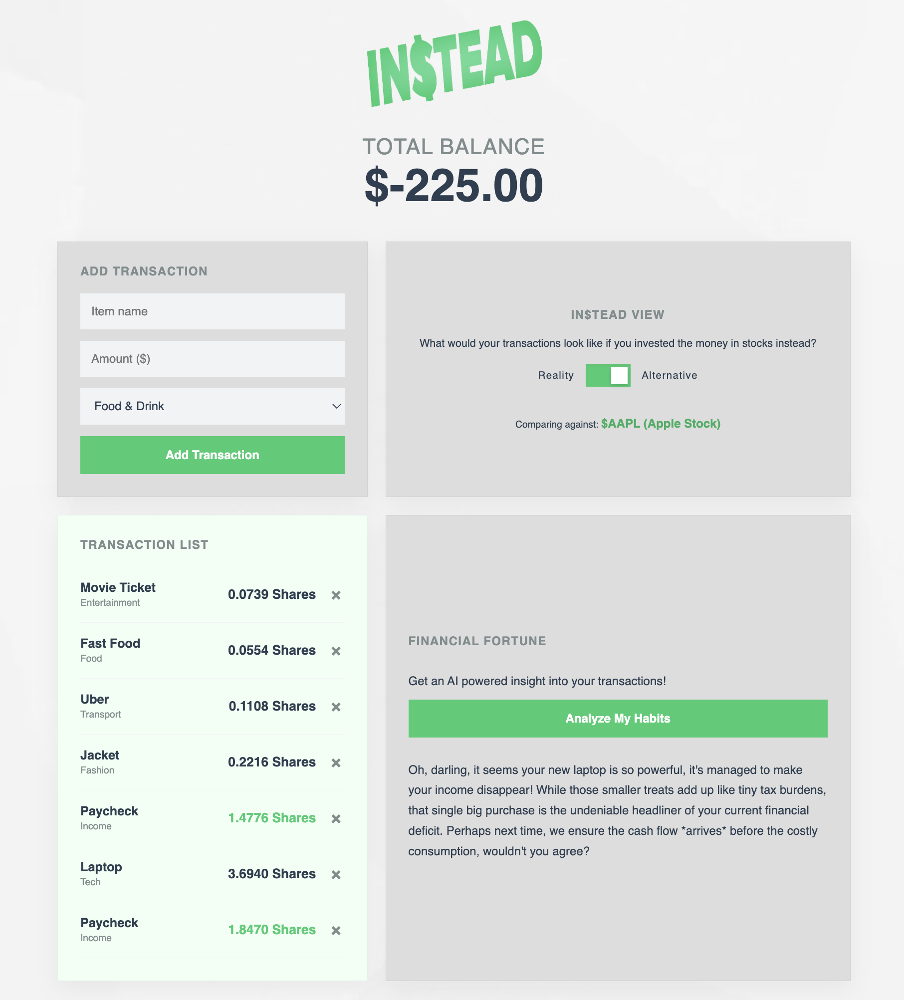
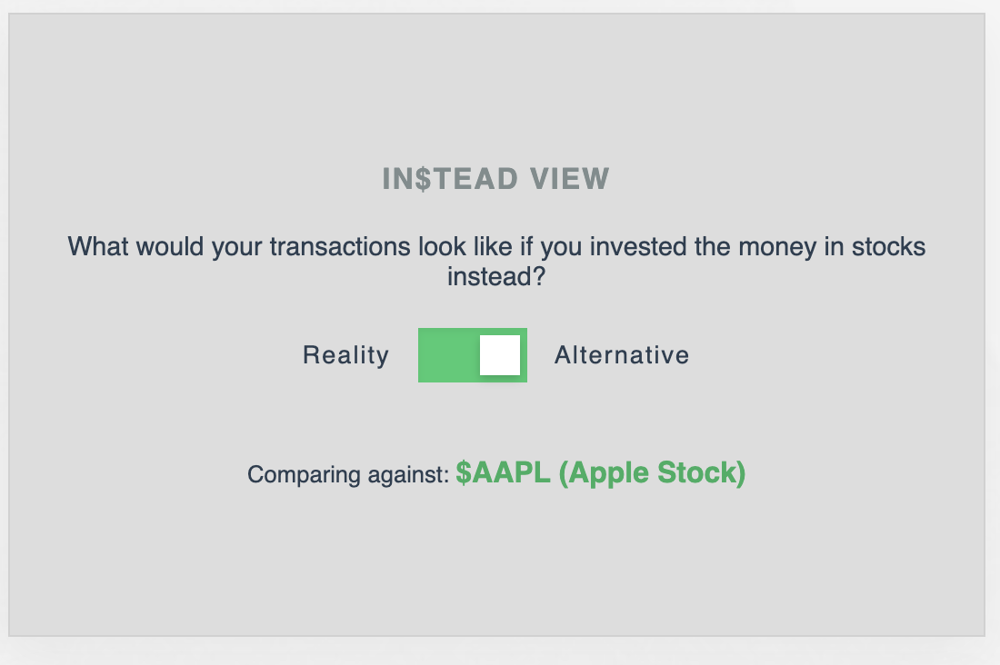
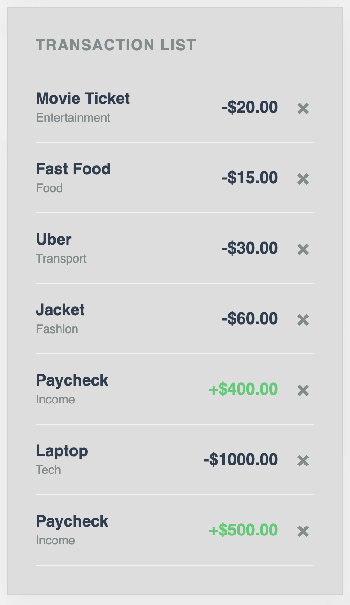
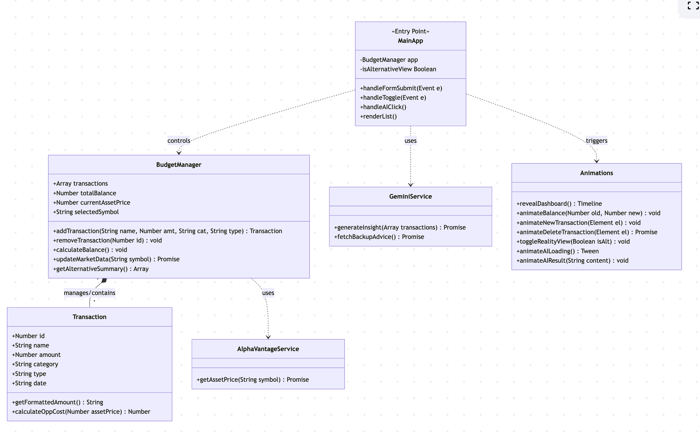

Instead App




Project Overview
Project GitHub RepositoryInstead is an interactive financial dashboard designed for spenders who want to transform boring budget tracking into a visual narrative. Traditional financial apps act as passive ledgers, showing users where their money went, but fail to provide the psychological motivation needed to stop impulsive spending.
This app implements Alpha Vantage's API to provide users with comparisions between their spending habits and the stock market, allowing them to visualize the opportunity cost of their purchases.
This app also implements Google Gemini's API to provide the user with a personalized AI insight into their spending habits
Technology and Skills Used
HTML, JavaScript, CSS, Object-Oriented Programming, JS Classes, API Integration